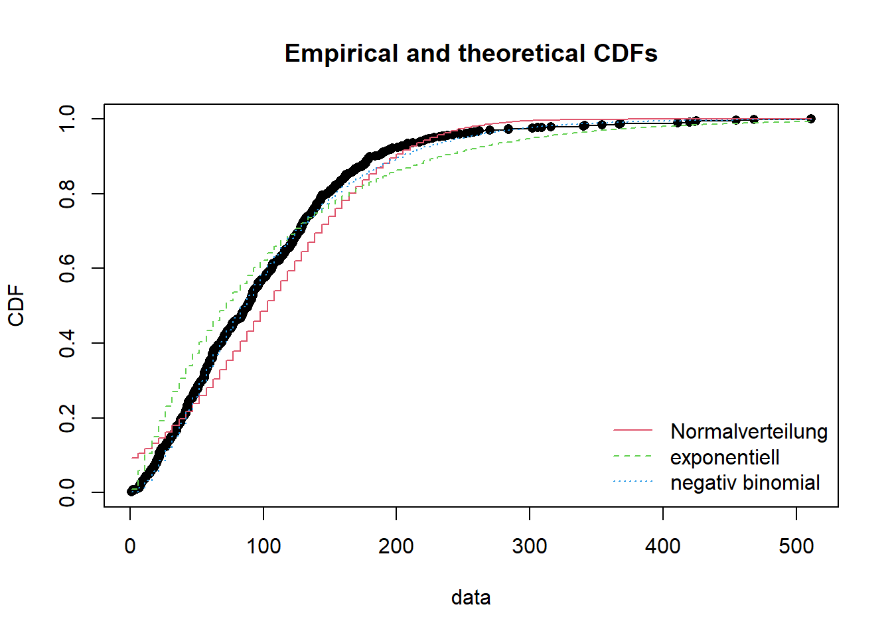
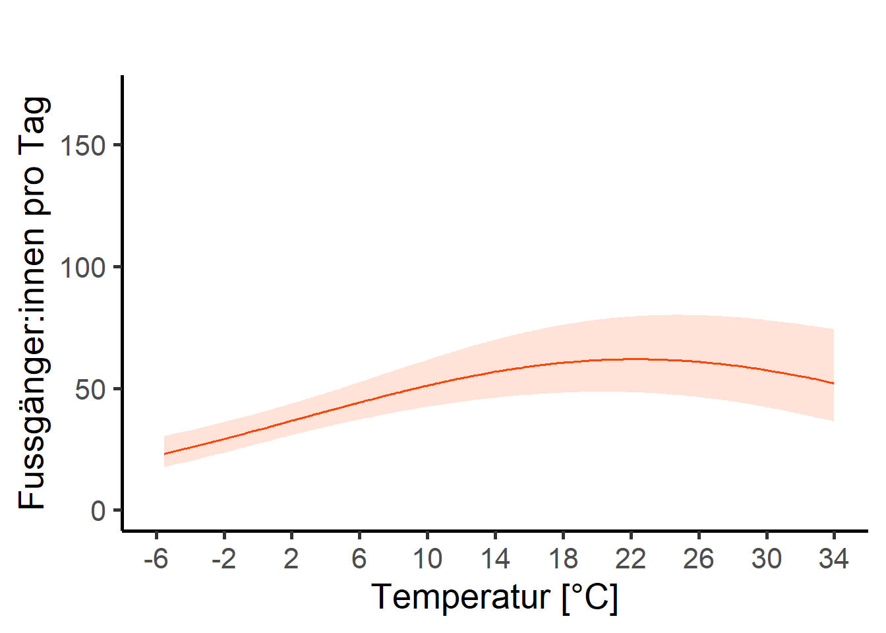
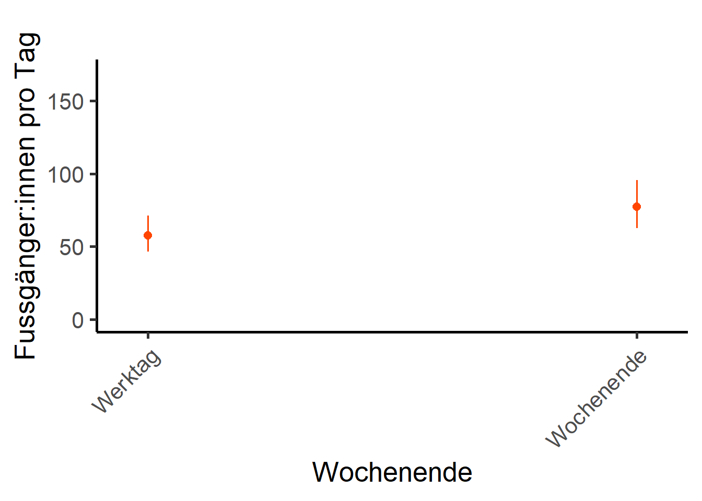

Musterlösung
umwelt <- inner_join(depo_daytime, meteo_day, by = c("Jahr", "Monat", "KW", "Wochenende"))Nachdem die deskriptiven Resultate vorliegen, kann jetzt die Berechnung eines multivariaten Modells angegangen werden. Das Ziel ist es, den Zusammenhang zwischen der gesamten Anzahl Besucher:innen (Total) und verschiedenen erklärenden Variablen (Wochentag, Ferien, Monat, Jahr, Phasen der Covid-Pandemie, Sonnenscheindauer, Höchsttemperatur, Niederschlagssumme) aufzuzeigen, und das während dem Tag, der Dämmerung und der Nacht (siehe dazu auch [Aufgabenstellung Abschlussbericht]).
Aktuell haben wir noch zwei verschiedene Datensätze von Interesse:
Einen mit den Besuchszahlen pro Tageszeit von Besucher:innen mit den dazugehörigen Datumsinformationen (Datensatz “depo_daytime” - zu Tageszeiten und Wochenende / Werktag aggregierte Stunden)
und einen mit den Wetterparametern pro Tag (“meteo_day”).
Diese beiden Datensätze müssen miteinander verbunden werden. Ziel: Ein Datensatz mit den täglichen Zähldaten (weiter unterteilt nach Tageszeit) und Conviniencevariablen wie Phase Covid, Ferien Ja oder Nein, Jahr, Monat, KW, Tageszeit, Wochenendtag oder Werktag, angereichert mit Wetterdaten.
Der neue Datensatz soll ” umwelt ” heissen.
umwelt <- inner_join(depo_daytime, meteo_day, by = c("Jahr", "Monat", "KW", "Wochenende"))# es darf keine NA's im datensatz haben
sum(is.na(umwelt))
# umwelt <- na.omit(umwelt)
summary(umwelt)Vergewissert euch, dass die numerischen Messwerte zu Wetter auch in numerischer Form vorliegen. (is.numeric())
Nachfolgende Schritte funktionieren nur, wenn umwelt als data.frame vorliegt! Prüft das und ändert das, falls noch kein data.frame (Hinweis: auch ein “tibble” funktioniert nicht, obwohl bei der Abfrage is.data.frame() TRUE angegeben wird. Damit ihr beim scalen keine NaN Werte erhaltet, wendet ihr darum am besten in allen Fällen zuerst den Befehl as.data.frame() an).
umwelt <- as.data.frame(umwelt)Problem: verschiedene Skalen der Variablen (z.B. Temperatur in Grad Celsius, Niederschlag in Millimeter und Sonnenscheindauer in %)
Lösung: Skalieren aller Variablen mit Masseinheiten gemäss unterstehendem Code:
umwelt <- umwelt |>
mutate(tre200jx_scaled = scale(tre200jx)|>
...umwelt <- umwelt |>
mutate(
tre200jx_scaled = scale(tre200jx),
tre200nx_scaled = scale(tre200nx),
rre150j0_scaled = scale(rre150j0),
rre150n0_scaled = scale(rre150n0),
sremaxdv_scaled = scale(sremaxdv)
)Korrelierende Variablen können das Modellergebnis verfälschen. Daher muss vor der Modelldefinition auf Korrelation zwischen den Messwerten getestet werden. Welches sind die erklärenden Variablen, welches ist die Abhängige? (Ihr müsst nicht prüfen, ob die Voraussetzungen zur Berechnung von Korrelationen erfüllt sind)
cor <- cor(subset(umwelt, select = c(ERSTE SPALTE MIT ERKLAERENDEN MESSWERTEN :
LETZTE SPALTE MIT ERKLAERENDEN MESSWERTEN)))cor <- cor(subset(umwelt, select = c(tre200nx: sremaxdv)))Mit dem folgenden Code kann eine Korrelationsmatrix (mit den Messwerten) aufgebaut werden. Hier kann auch die Schwelle für die Korrelation gesetzt werden (0.7 ist liberal / 0.5 konservativ).
cor[abs(cor) < 0.7] <- 0 # Setzt alle Werte kleiner 0.7 auf 0Zur Visualisierung kann ein Plot erstellt werden.
chart.Correlation(subset(umwelt, select = c(tre200nx: sremaxdv)),
histogram = TRUE, pch = 19)chart.Correlation(subset(umwelt, select = c(ERSTE SPALTE MIT ERKLAERENDEN MESSWERTEN :
LETZTE SPALTE MIT ERKLAERENDEN MESSWERTEN)),
histogram = TRUE, pch = 19)Wo kann eine kritische Korrelation beobachtet werden? Kann man es verantworten, trotzdem alle (Wetter)parameter in das Modell zu geben?
Falls ja: warum? Falls nein: schliesst den betreffenden Parameter aus. Wenn ihr Parameter ausschliesst: welchen der beiden korrelierenden Parameter behaltet ihr im Modell?
Aktuell haben wir im umwelt-Datensatz noch alle Tageszeiten zusammen gespeichert. Für die Berechnung der Modelle unterteilen wir das noch in Tag, Dämmerung (Morgen- und Abenddämmerung zusammen) und Nacht. Hier eine Inspiration dazu:
umwelt_day <- umwelt |>
filter(Tageszeit == "Tag")
umwelt_duskdawn <- ...
umwelt_night <- ...umwelt_day <- umwelt |>
filter(Tageszeit == "Tag")
umwelt_duskdawn <- umwelt |>
filter(Tageszeit == "Morgen" | Tageszeit == "Abend" )
umwelt_night <- umwelt |>
filter(Tageszeit == "Nacht")Führe die dredge-Funktion und ein Modelaveraging durch. Der Code dazu ist unten. Was passiert in der Funktion? Macht es Sinn, die Funktion auszuführen?
Hinweis: untenstehender Code ist sehr rechenentensiv.
# Hier wird die Formel für die dredge-Funktion vorbereitet
f <- Total ~ Wochentag + Ferien + Phase + Monat +
tre200jx_scaled + rre150j0_scaled + rre150n0_scaled +
sremaxdv_scaled
# Jetzt kommt der Random-Factor hinzu und es wird eine Formel daraus gemacht
f_dredge <- paste(c(f, "+ (1|Jahr)"), collapse = " ") |>
as.formula()
# Das Modell mit dieser Formel ausführen
m <- glmer.nb(f_dredge, data = umwelt, na.action = "na.fail")
# Das Modell in die dredge-Funktion einfügen (siehe auch ?dredge)
all_m <- dredge(m)
# suche das beste Modell
print(all_m)
# Importance values der Variablen
# hier wird die wichtigkeit der Variablen in den verschiedenen Modellen abgelesen
MuMIn::sw(all_m)
# Schliesslich wird ein Modelaverage durchgeführt
# Schwellenwert für das delta-AIC = 2
avgmodel <- model.avg(all_m, rank = "AICc", subset = delta < 2)
summary(avgmodel)Die Verteilung der abhängigen Variabel bestimmt, was für ein Modell geschrieben werden kann. Alle Modelle gehen von einer bestimmten gegebenen Verteilung aus. Wenn diese Annahme verletzt wird, kann es sein, dass das Modellergebnis nicht valide ist.
Untenstehender Codeblock zeigt, wie unsere Daten auf verschiedene Verteilungen passen.
Hinweis: es kann sein, dass nicht jede Verteilung geplottet werden kann, es erscheint eine Fehlermeldung. Das ist nicht weiter schlimm, die betreffende Verteilung kann gelöscht werden. Analog muss das auch im Befehl gofstat() passieren.
Hinweis: CDF = Cumulative distribution function; Wikipedia = “Anschaulich entspricht dabei der Wert der Verteilungsfunktion an der Stelle x der Wahrscheinlichkeit, dass die zugehörige Zufallsvariable X einen Wert kleiner oder gleich x annimmt.” Ihr müsst aber nicht weiter verstehen, wie das berechnet wird, wichtig für euch ist, dass ihr den Plot interpretieren könnt.
f1 <- fitdist(umwelt_day$Total, "norm") # Normalverteilung
f1_1 <- fitdist((umwelt_day$Total + 1), "lnorm") # log-Normalvert (beachte, dass ich +1 rechne.
# log muss positiv sein; allerdings kann man die
# Verteilungen dann nicht mehr miteinander vergleichen).
f2 <- fitdist(umwelt_day$Total, "pois") # Poisson
f3 <- fitdist(umwelt_day$Total, "nbinom") # negativ binomial
f4 <- fitdist(umwelt_day$Total, "exp") # exponentiell
f5<-fitdist(umwelt_day$Total,"gamma") # gamma (berechnung mit meinen Daten nicht möglich)
f6 <- fitdist(umwelt_day$Total, "logis") # logistisch
f7 <- fitdist(umwelt_day$Total, "geom") # geometrisch
f8<-fitdist(umwelt_day$Total,"weibull") # Weibull (berechnung mit meinen Daten nicht möglich)
gofstat(list(f1, f2, f3, f4, f6, f7),
fitnames = c(
"Normalverteilung", "Poisson",
"negativ binomial", "exponentiell", "logistisch",
"geometrisch"))
# die 2 besten (gemaess Akaike's Information Criterion) als Plot + normalverteilt,
plot.legend <- c("Normalverteilung", "exponentiell", "negativ binomial")
# vergleicht mehrere theoretische Verteilungen mit den empirischen Daten
cdfcomp(list(f1, f4, f3), legendtext = plot.legend)
Wie sind unsere Daten verteilt? Welche Modelle können wir anwenden?
Wählt die besten Verteilungen pro Tageszeit (umwelt_day, umwelt_duskdawn, umwelt_night) aus und berechnet damit nachfolgend Modelle.
Jetzt gehts ans Eingemachte!
Ich verwende hauptsächlich die Funktione glmmTMB(). Es ist wahnsinnig schnell und erlaubt viele Spezifikationen: Link
Auch glmer() aus der Bibliothek lme4 ist recht neu und praktisch (diese Bibliothek wird auch in vielen wissenschaftlichen Papern im Feld Biologie / Wildtiermamagement zitiert). Link
Hinweis: Auch wenn wir gerade herausgefunden haben, dass die Verteilung negativ binominal (in meinem Fall) ist, berechne ich für den Vergleich zuerst ein “einfaches Modell” der Familie poisson. Alternative Modelle rechnen wir in später. Wir starten mit dem TAG (Datensatz umwelt_day).
Frage: Warum bestimmen wir das Jahr als random factor?
Falls ihr der Meinung seid, Jahr ist kein “guter” random factor, dann nehmt es nicht an random factor ins Modell sondern als erklärende Variable. Begründet das unbedingt in eurer Methodik.
Die Modellformel lautet:
poisson_model <- glmer(Total ~ Monat + Ferien + Phase + Wochenende +
tre200jx_scaled + rre150j0_scaled + rre150n0_scaled +
sremaxdv_scaled +
(1 | Jahr), family = poisson, data = umwelt_day)
summary(poisson_model) # zeigt das Ergebins des ModellsFrage: Was bedeutet “family = poisson”?
Löst zuerst Aufgabe 6b bevor ihr alternative (besser passende) Modelle rechnet; das kommt in Aufgabe 6c!
Bitte unbedingt die Vignette des DHARMa-Package konsultieren!
Hinweis: Wir verwenden etwas andere Funktionen als in der Vorlesung am morgen. Sie sind unten aufgeführt, und die Funktionen analog zu den Funktionen aus der Vorlesung, aber halt etwas anders.
# Residuals werden über eine Simulation auf eine Standard-Skala transformiert und
# können anschliessend getestet werden. Dabei kann die Anzahl Simulationen eingestellt
# werden (dauert je nach dem sehr lange)
simulationOutput <- simulateResiduals(fittedModel = poisson_model, n = 1000)
# plotting and testing scaled residuals
plot(simulationOutput)
testResiduals(simulationOutput)
testUniformity(simulationOutput)
# The most common concern for GLMMs is overdispersion, underdispersion and
# zero-inflation.
# separate test for dispersion
testDispersion(simulationOutput)
# test for Zeroinflation
testZeroInflation(simulationOutput)
# Testen auf Multicollinearität (dh zu starke Korrelationen im finalen Modell, zB falls
# auf Grund der ökologischen Plausibilität stark korrelierte Variablen im Modell)
# use VIF values: if values less then 5 is ok (sometimes > 10), if mean of VIF values
# not substantially greater than 1 (say 5), no need to worry.
car::vif(poisson_model) # funktioniert nicht mit glmmTMB
mean(car::vif(poisson_model))
# erklaerte varianz
# The marginal R squared values are those associated with your fixed effects,
# the conditional ones are those of your fixed effects plus the random effects.
# Usually we will be interested in the marginal effects.
performance::r2(poisson_model)Sind die Voraussetzungen des Modells erfüllt?
Wir sind auf der Suche nach dem minimalen adäquaten Modell. Das ist ein iterativer Prozess. Wir schreiben ein Modell, prüfen ob die Voraussetzungen erfüllt sind und ob die abhängige Variable besser erklärt wird als im Vorhergehenden. Und machen das nochmals und nochmals und nochmals…
glmmTMB(Total ~ Monat + Ferien + ..., family =nbinom1,
data = umwelt_day)Über family = kann in der Funktion _glmer()__ einiges (aber leider nicht alles so einfach [z.B. negativ binominale Modelle]) angepasst werden: Link
Auch über link = kann man anpassen: Link
Unsere (meine) Daten sind negativ binominal verteilt. Daher sollte wir unbedingt ein solches Modell programmieren. –> Funktion glmer.nb()
nb_model_day <- glmer.nb(Total ~ Monat + Ferien +
...,
data = umwelt_day)nb_model_day <- glmer.nb(Total ~ Monat + Ferien + Phase + Wochenende +
tre200jx_scaled + rre150j0_scaled +
sremaxdv_scaled +
(1 | Jahr), data = umwelt_day)glmmTMB((Total + 1) ~ ...
family = Gamma(link = "log"), data = umwelt_night)glmmTMB((Total + 1) ~ Monat + Ferien + Phase + Wochenende +
tre200nx_scaled + I(tre200nx_scaled^2) + rre150n0_scaled +
(1 | Jahr),
family = Gamma(link = "log"), data = umwelt_night)nb_quad_model_day <- glmmTMB(Total ~ Monat + Ferien + Phase + Wochenende +
tre200jx_scaled + I(tre200jx_scaled^2) + # hier ist der quadratische Term
rre150j0_scaled + sremaxdv_scaled +
(1 | Jahr), family =nbinom1, # es ist ein negativ binomiales Modell
data = umwelt_day)Hinweis: Interaktionen berechnen ist sehr rechenintensiv. Auch die Interpretation der Resultate wird nicht unbedingt einfacher. Wenn ihr auf Interaktionen testet, dann geht “langsam” vor, probiert nicht zu viel auf einmal und verwendet glmmTMB.
...
Monat * rre150j0_scaled +
...nb_quad_int_model_day <- glmmTMB(Total ~ Ferien + Phase + Wochenende +
Monat * rre150j0_scaled+ tre200jx_scaled + I(tre200jx_scaled^2) +
sremaxdv_scaled +
(1|Jahr), data = umwelt_day)nb_model_day_zi <- glmmTMB(...,
# The basic glmmTMB fit — a zero-inflated Poisson model with a single zero-
# inflation parameter applying to all observations (ziformula~1)
ziformula=~1,
family = nbinom1)nb_model_day_zi <- glmmTMB(Total ~ Monat + Phase + Wochenende +
tre200jx_scaled + rre150j0_scaled +
sremaxdv_scaled +
(1 | Jahr), data = umwelt_day,
# The basic glmmTMB fit — a zero-inflated Poisson model with a single zero-
# inflation parameter applying to all observations (ziformula~1)
ziformula=~1,
family = nbinom1)Hinweis: Nur Modelle mit demselben Datensatz können miteinander verglichen werden. D.h., dass die Modelle mit den originalen Daten nicht mit logarithmiertem oder exponierten Daten verglichen werden können und glmer kann nicht mit glmmTMB verglichen werden. –> Untenstehende Funktion hat für uns also einen eingeschränkten Wert…
## Vergleich der Modellguete mittels AICc
cand.models <- list()
cand.models[[1]] <- Tages_Model
cand.models[[2]] <- Tages_Model_nb
cand.models[[3]] <- Tages_Model_nb_quad
Modnames <- c(
"Tages_Model", "Tages_Model_nb",
"Tages_Model_nb_quad"
)
aictab(cand.set = cand.models, modnames = Modnames)
## K = Anzahl geschaetzter Parameter (2 Funktionsparameter und die Varianz)
## Delta_AICc <2 = Statistisch gleichwertig
## AICcWt = Akaike weight in %Bei meinen Daten waren die Modellvoraussetzungen überall mehr oder weniger verletzt. Das ist ein Problem, allerdings auch nicht ein so grosses (man sollte es aber trotzdem ernst nehmen). Mehr dazu unter:
Schielzeth u. a. (2020) - Robustness of linear mixed‐effects models to violations of distributional assumptions. Link
Lo und Andrews (2015) - To transform or not to transform: using generalized linear mixed models to analyse reaction time data Link
Falls die Voraussetzungen stark verletzt werden, wäre eine Transformation angezeigt. Mehr dazu unter: Link
library("moments")
skewness(umwelt_day$Anzahl_Total)
## A positive value means the distribution is positively skewed (rechtsschief).
## The most frequent values are low; tail is toward the high values (on the right-hand side)Ihr habt bereits sehr viel Arbeit in die Suche nach dem besten Modell für den Tag investiert und das nun gefunden. In wir interessieren uns nun dafür, ob die Effekte während der Dämmerung und der Nacht gleich oder verschieden sind.
Hinweis: ihr müsst nicht mehr alles komplett duchspielen. Das Modell, welches am Tag gut war, ist sehr wahrscheinlich auch bei den anderen Datensätzen recht gut. Startet also mit einer ähnlichen spezifikation wie beim besten Modell für den Tag.
Welches ist euer bestes Modell für den Tag?
# mein bestes Modell ist:
# interaktion zero inflation
# "Ferien" not sig, therefore exclude
nb_int_model_day_zi <- glmmTMB(Total ~ Phase + Wochenende +
Monat * rre150j0_scaled + tre200jx_scaled + I(tre200jx_scaled^2) +
sremaxdv_scaled +
(1 | Jahr), data = umwelt_day,
# The basic glmmTMB fit — a zero-inflated Poisson model with a single zero-
# inflation parameter applying to all observations (ziformula~1)
ziformula=~1,
family = nbinom1)Modellresultate können mit summary() angezeigt werden. Ich verwende aber lieber die Funktion tab_model()! Die Resultate werden gerundet und praktisch im separaten Fenster angezeigt. Von dort kann man sie via copy + paste ins (z.B.) Word bringen.
tab_model(MODELLNAME,
transform = NULL, # To plot the estimates on the linear scale, use transform = NULL.
show.se = TRUE) # zeige die Standardabweichung
## The marginal R squared values are those associated with your fixed effects,
## the conditional ones are those of your fixed effects plus the random effects.
## Usually we will be interested in the marginal effects.# schreibe fun fuer continuierliche var
rescale_plot_num_day <- function(input_df, input_term, unscaled_var, scaled_var, num_breaks, x_lab, y_lab, x_scaling, x_nk) {
plot_id <- plot_model(input_df, type = "pred", terms = input_term, axis.title = "", title = "", color = "orangered")
labels <- round(seq(floor(min(unscaled_var)), ceiling(max(unscaled_var)), length.out = num_breaks + 1) * x_scaling, x_nk)
custom_breaks <- seq(min(scaled_var), max(scaled_var), by = ((max(scaled_var) - min(scaled_var)) / num_breaks))
custom_limits <- c(min(scaled_var), max(scaled_var))
plot_id <- plot_id +
scale_x_continuous(breaks = custom_breaks, limits = custom_limits, labels = c(labels), labs(x = x_lab)) +
scale_y_continuous(labs(y = y_lab), limits = c(0, 170)) +
theme_classic(base_size = 20)
return(plot_id)
}
rescale_plot_num_night <- function(input_df, input_term, unscaled_var, scaled_var, num_breaks, x_lab, y_lab, x_scaling, x_nk) {
plot_id <- plot_model(input_df, type = "pred", terms = input_term, axis.title = "", title = "", color = "darkblue")
labels <- round(seq(floor(min(unscaled_var)), ceiling(max(unscaled_var)), length.out = num_breaks + 1) * x_scaling, x_nk)
custom_breaks <- seq(min(scaled_var), max(scaled_var), by = ((max(scaled_var) - min(scaled_var)) / num_breaks))
custom_limits <- c(min(scaled_var), max(scaled_var))
plot_id <- plot_id +
scale_x_continuous(breaks = custom_breaks, limits = custom_limits, labels = c(labels), labs(x = x_lab)) +
scale_y_continuous(labs(y = y_lab), limits = c(0, 20)) +
theme_classic(base_size = 20)
return(plot_id)
}
rescale_plot_num_duskdawn <- function(input_df, input_term, unscaled_var, scaled_var, num_breaks, x_lab, y_lab, x_scaling, x_nk) {
plot_id <- plot_model(input_df, type = "pred", terms = input_term, axis.title = "", title = "", color = "mediumvioletred")
labels <- round(seq(floor(min(unscaled_var)), ceiling(max(unscaled_var)), length.out = num_breaks + 1) * x_scaling, x_nk)
custom_breaks <- seq(min(scaled_var), max(scaled_var), by = ((max(scaled_var) - min(scaled_var)) / num_breaks))
custom_limits <- c(min(scaled_var), max(scaled_var))
plot_id <- plot_id +
scale_x_continuous(breaks = custom_breaks, limits = custom_limits, labels = c(labels), labs(x = x_lab)) +
scale_y_continuous(labs(y = y_lab), limits = c(0, 15)) +
theme_classic(base_size = 20)
return(plot_id)
}
# schreibe fun fuer diskrete var
rescale_plot_fac_day <- function(input_df, input_term, unscaled_var, scaled_var, num_breaks, x_lab, y_lab, x_scaling, x_nk) {
plot_id <- plot_model(input_df, type = "pred", terms = input_term, axis.title = "", title = "", color = "orangered")
plot_id <- plot_id +
scale_y_continuous(labs(y = y_lab), limits = c(0, 170)) +
theme_classic(base_size = 20) +
theme(axis.text.x = element_text(angle = 45, vjust = 1, hjust = 1))
return(plot_id)
}
rescale_plot_fac_night <- function(input_df, input_term, unscaled_var, scaled_var, num_breaks, x_lab, y_lab, x_scaling, x_nk) {
plot_id <- plot_model(input_df, type = "pred", terms = input_term, axis.title = "", title = "", color = "darkblue")
plot_id <- plot_id +
scale_y_continuous(labs(y = y_lab), limits = c(0, 20)) +
theme_classic(base_size = 20) +
theme(axis.text.x = element_text(angle = 45, vjust = 1, hjust = 1))
return(plot_id)
}
rescale_plot_fac_duskdawn <- function(input_df, input_term, unscaled_var, scaled_var, num_breaks, x_lab, y_lab, x_scaling, x_nk) {
plot_id <- plot_model(input_df, type = "pred", terms = input_term, axis.title = "", title = "", color = "mediumvioletred")
plot_id <- plot_id +
scale_y_continuous(labs(y = y_lab), limits = c(0, 15)) +
theme_classic(base_size = 20) +
theme(axis.text.x = element_text(angle = 45, vjust = 1, hjust = 1))
return(plot_id)
}Nun können die einzelnen Variabeln aus den besten Modellen in der Funktion jeweils für die Plots angepasst werden:
## Tagesmaximaltemperatur
input_df <- nb_int_model_day_zi
input_term <- "tre200jx_scaled [all]"
unscaled_var <- umwelt_day$tre200jx
scaled_var <- umwelt_day$tre200jx_scaled
num_breaks <- 10
x_lab <- "Temperatur [°C]"
y_lab <- "Fussgänger:innen pro Tag"
x_scaling <- 1 # in prozent
x_nk <- 0 # x round nachkommastellen
p_temp <- rescale_plot_num_day(
input_df, input_term, unscaled_var, scaled_var, num_breaks,
x_lab, y_lab, x_scaling, x_nk
)
p_temp
## Wochentag
input_df <- nb_int_model_day_zi
input_term <- "Wochenende [all]"
unscaled_var <- umwelt_day$Wochenende
scaled_var <- umwelt_day$Wochenende
num_breaks <- 10
x_lab <- "Wochentag"
y_lab <- "Fussgänger:innen pro Tag"
x_scaling <- 1 # in prozent
x_nk <- 0 # x round nachkommastellen
p_wd <- rescale_plot_fac_day(
input_df, input_term, unscaled_var, scaled_var, num_breaks,
x_lab, y_lab, x_scaling, x_nk)
p_wd
Hinweis: damit unsere Plots verglichen werden können, sollen sie alle dieselbe Skalierung (limits) auf der y-Achse haben. Das wird erreicht, indem man bei jedem Plot die limits in scale_y_continuous() gleichsetzt.
Hinweis: Es könnten auch interaction-plots erstellt werden: Link
Nun habt ihr verschiedenste Ergebnisse vorliegen. In einem wissenschaftlichen Bericht sollen aber niemals alle Ergebnisse abgebildet werden. Eine Faustregel besagt, dass nur signifikante Ergebnisse visualisiert werden. Entscheidet euch daher, was ihr in eurem Bericht abbilden wollt und was lediglich besprochen werden soll.
Stellt im Bericht die Ergebnisse des Tages, der Dämmerung und der Nacht gegenüber und beschreibt die Gemeinsamkeiten und Unterschieden. Behaltet dabei immer die Forschungsfragen in Erinnerung.